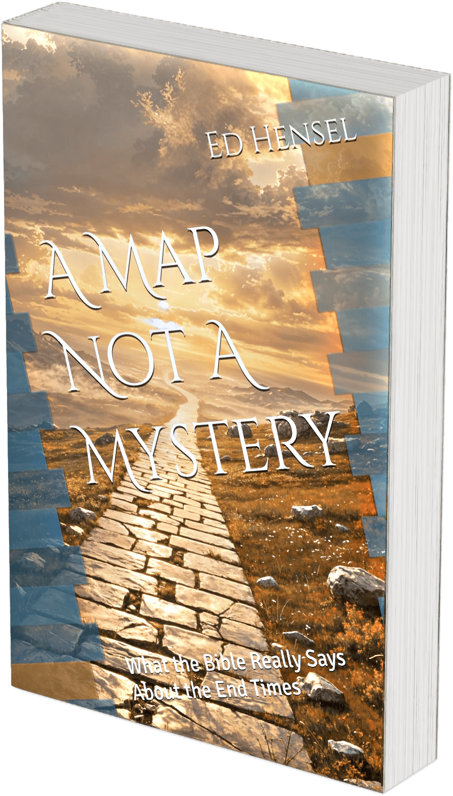

A Map, Not a Mystery
Are you tired of the blood-moon calendars, the rapture countdown clocks, and the prophecy charts that keep being revised? A Map, Not a Mystery is for every Christian who has ever sat through an end-times sermon and walked away more confused than hopeful.
Built on three interlocking perspectives that formed the mainstream of Christian thought for fifteen centuries before John Nelson Darby introduced something very different in the 1830s, this book shows that much of what gets marketed as future prophecy was already fulfilled in datable, verified history — and that this does not shrink your hope but makes it bigger, more solid, and more joyful.
What You'll Discover
- A verse-by-verse walk through Matthew 24
- The gripping eyewitness story of Jerusalem's fall in AD 70
- The identity of the beast and the meaning of 666
- The amillennial case for the present reign of Christ
- God's enduring faithfulness to ethnic Israel in Romans 9 through 11
- Four great future realities still coming — the bodily return of Christ, the general resurrection, the final judgment, and the new creation
Perfect for Small Groups
A Map, Not a Mystery includes discussion questions at the end of each chapter, making it an ideal resource for Bible studies, Sunday-school classes, and small-group conversations. Gather your group and walk through it together.
Listen to the Audiobook — Free
The complete, unabridged second edition • 18 chapters • 8 hours 48 minutes
Jump to a Chapter
Prefer the YouTube app? Listen on YouTube — it keeps your place, plays in the background on most phones, and is easy to share with a friend or small group. Want one chapter at a time? Try the chapter-by-chapter playlist.
Ready to Read?
Pick up your copy today and discover why biblical prophecy is a map — not a mystery.
Buy on Amazon